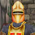

|  | Guard Aerryn | 雑談▼ |
| Guard Aerryn says 'Hail Shriast. I am sorry but I do not have time to chat I must get back to my patrol. May The Prime Healer walk with you. | ||
| Guard Aerryn 「こんにちは Shriast。申し訳ないのだが、私は哨戒に戻らねばならないので、 君と話している暇がない。 The Prime Healer （Rodcet Nife）が君と共にありますように。 | ||
| Guard Drath | ||
| Guard Drath says 'Hail Shriast. If you are not busy we can always use help keeping the beetle popuration under control in front of the gates. But be careful, we have had sightings of a large Queen beetle out there. | ||
| Guard Drath 「こんにちは Shriast。もし忙しくないなら、我々はいつでも 門の前の虫の数を一定に保つ手助けをしよう。ただ、 我々は大きな Qeen beetle を目撃している。注意してくれたまえ。 | ||
| Guard Elron | ||
| Guard Elron says 'Greetings Shriast. I am sorry but I can't concentrate on my post and talk to you at the same time. Especially when I shoud be out searching for [Lucie].. Please excuse me. | ||
| Guard Elron 「こんにちは Shriast。申し訳ないが、私は持ち場に 集中しなければならないから、君と話しながらというわけにはいかないんだ。 特に[ Lucie ]を探しに外に出なければならない時にはね・・・。すまないね。 | ||
| Lucie のクエストは、South Qeynos の Zamel からも出てますね。 結構、大変らしいです。（未遂） | ||
| Guard Furithane | ||
| Guard Furithane says 'Hail Shriast. You better not be in Qeynos to start trouble. Commander Kane has little patience for ruffians. If he was in charge of Qeynos things would be much better. | ||
| Guard Furithane 「やあShriast。Qeynos では騒ぎを起こさない方が いいよ。Commander Kane は 無法者には容赦ないからね。あの人が Qeynos を管理さえすれば、もっとよくなるだろうになあ。 | ||
| Guard Gehnus | ||
| Guard Gehnus says 'Hail Shriast! Good to see ya. Welcome to Qeynos. My name is Gehnus Torris. If you are looking to do some trading I would steer clear out of that Tubal fellow. He is from Highpass Hold and they are known for taking advantage of travellers. | ||
| 「やあ、Shriast！ ご機嫌いかがかな。Qeynos へようこそ。 私は Gehnus Torris だ。商売をするつもりなら、 Tubal の一味には近づかない方がいいよ。奴は HighpassHold から 来たんだが、旅行者につけこむことで有名なんだ。 | ||
| Guard Hewet | ||
| Guard Hewet says 'Well met Shriast, but I must get back to my duties. Stay out of trouble. | ||
| Guard Hewet 「こんにちは Shriast、だが私は仕事に戻らねば。 面倒を起こさずにいてくれたまえよ。 | ||
| Guard Hezlan | ||
| Guard Hezlan says 'Hello Shriast. My name is Hezlan Nur and I am a member of the Qeynos Guard, serving the will of Antonius Bayle. Anything trying to get into Qeynos has to go through me first. Heh! I sure love it when those dirty Sabertooths try though! Nothing is as gratifying as the death wail of a Gnoll. | ||
| Guard Hezlan 「やあ Shriast。おれは Hezlan Nur、 Qeynos Guard の一員で、Antonius Bayle に仕えてる。 Qeynos に入り込もうとする連中は、まずおれを越えていくことだな。 へん！ しかし、あの薄汚い Sabertooth どもが通り抜けようとする時が最高だね！ Gnoll の断末魔の叫びほど愉快なものはないからね。 | ||
| [ Antonius Bayle ] についての説明は、Guard 全員から同じ答えを聞けます。 [ Commander Kane(Kane Bayle)] [ Captain Tillin ] [ Gnoll ](Sarbertooths)も同様。 | ||
| Guard Imker | ||
| Guard Imkar says 'Hello Shriast. My name is Imker and I am kind of new at job but I can give you some advice. Be careful here in Qeynos. There are many [dark forces] at work here that is best not disturb. | ||
| Guard Imkar 「やあ Shriast。僕の名前は Imker。仕事についてまだ間もないけれど、 いくらかアドバイスできるよ。この Qeynos では気をつけてほしい。 乱さない方がいいような、多くの[ 闇の力 ]が働いているんだ。 | ||
| Guard Liven | ||
| Guard Liven says 'Hello there Shriast. Guard Liven at your service. You can walk the streets of Qeynos and feel safe knowing that we guards are here to protect you. Just be careful to not fall in with the [wrong crowd]. | ||
| Guard Liven 「やあこんにちは Shriast。Guard Liven がいつでも 君の役に立とう。我々衛兵が君を守るから、 Qeynos の道を歩くときは 安心してくれ。ただ[ 邪悪な雲 ]と 知り合いになるようなことだけはないように気をつけてくれよ。 | ||
| Guard Obyn | ||
| Guard Obyn says 'Hello there Shriast. Obyn is my name. Are you from Qeynos? I was born here myself. It's the best city on all of Norrath if you ask me. Well I better get back to guarding. | ||
| Guard Obyn 「やあこんにちは Shriast。私は Obyn だ。君は Qeynos の生まれかい？ 私はここで生まれたんだ。そうだな、Qeynos は Norrath で一番いい都市だね。 さて、私は見張り勤務に戻るよ。 | ||
| Guard Rashik | ||
| Guard Rashik says 'Hello Shriast. my name is Rashik Hiccs and I would like to welcome you to Qeynos of behalf of all of us guards. If you get into trouble, just find one of us and we will help you out. | ||
| Guard Rashik 「やあ Shriast。私の名前は Rashik Hiccs。我々守衛を代表して、 Qeynos に来てくれたことを歓迎するよ。もし面倒に巻き込まれたら、 我々を探してくれればいい。そうすれば君を助け出すからね。 | ||
| Guard Shorm | ||
| Guard Shorm says 'What do you want with bothing Shorm? I have no time for the likes of you Shriast. Clear my path or meet my blade. | ||
| Guard Shorm 「この Shorm をうるさがらせて何をしようっていうんだ？ お前のような奴の相手をしている暇はない。道を開けろ。さもなくば この剣をお見舞いするぞ。 | ||
| Guard Treitan | ||
| Guard Treitan says 'Hail. Please leave here immediately. This no place for the common citizen. | ||
| Guard Treitan 「こんにちは。どうぞすぐに立ち去ってくれたまえ。ここは 一般市民は立ち入り禁止なのだ。 | ||
| 北門の Guard House にて。 | ||
| Guard Vaskif | ||
| Guard Vaskif says 'Good night to you Shriast. Beware. We have had reports of the undead prowling about on the plains just north of here. Evil is growing here in Qeunos. I can sense it. | ||
| Guard Vaskif 「こんばんはShriast。用心してくれたまえ。 すぐ北の平原にアンデッドがうろついているという報告を受けた。 この Qeynos では邪悪なものが次第に大きくなっている。私には感じられるのだ。 | ||
| Guard Wefnin | ||
| Guard Wefnin says 'Hail Shriast. If you are looking for the way to South Qeynos, the passage through the city wall south of the cobbler's shop leads to Merchant's Square near the Clock of Ak'Anon. | ||
| Guard Wefnin 「こんにちは Shriast。South Qeynos への道を 探しているなら、cobbler の店の南の壁を抜ける通りを行けば、 Clock of Ak'Anon の近くの Merchant's Square に出ますよ。 | ||
| Guard Weleth | ||
| Guard Weleth says 'Hail Shriast. My name is Weleth Nagoh. In addition to my patrol, I am in charge of keeping the Guard House stocked with supplies. I must get back to my duty. Farewell. | ||
| Guard Weleth 「こんにちは Shriast。私の名は Weleth Nagoh だ。 歩哨の仕事に加えて、私は糧食が蓄えられている Guard House の管理をしている。 もう仕事に戻らねば。さらばだ。 | ||
| Guard Simkin | ||
| Guard Simkin says 'Heh? Shriast huh? What do you want? Can't you see I am a busy man. Guarding and protecting you weaklings.. er..citizens. You best just move along before something happens to you. | ||
| Guard Simkin 「へぇ？ ふん、Shriast？ 何がしたいんだ？ おれが忙しい人間だってことがわからんのか？ 歩哨と お前ら虚弱者・・・じゃない、市民を守ってるんでね。 お前の身に何か起こる前に、行った方が身のためだ。 | ||
| Guard Jerith | ||
| Guard Jerith says 'Um, sorry Shriast. I don't with to be rude, but, I must not be distracted while I am at my post. Commander Bayle trusted me with his watch and I will not let him down. | ||
| Guard Jerith 「うむ、すまない Shriast。私は君に対して失礼では ありたくないが、持ち場にいる間は気を散らすわけにはいかない。 Commander Bayle は私に期待し私を信用しておられる。私は 彼を失望させるわけにはいかないのだ。 | ||
| Guard Ginton | ||
| Guard Ginton says 'Hello Shriast. My name is Ginton Firepride. My pop owns a smithy in South Qeynos if you are looking for some new equipment. | ||
| Guard Ginton 「やあ Shriast。おれの名前は Ginton Firepride だ。 新しい装備を探してるんなら、おれの親父が South Qeynos で 鍛冶屋をやってるぜ。 | ||
| Guard Perin | ||
| Guard Perin says 'Hail. My name is Perin. If you had any smarts at all you would be careful who you talk to around here. | ||
| Guard Perin 「やあ。君にいやしくも知性があるならば、 このあたりは話しかける人物に気を付けたまえよ。 | ||
| つまり、貴様なんぞが俺様に話しかけるんじゃねぇ、って ことでしょうか（＾＾； | ||
| Guard Augos | ||
| Guard Augos says 'Yeah my name is Augos. Listen up. Kane says I don't have to talk to none of you peons if I don't feel like it. I don't feel like it. So unless you want trouble you had better move on. | ||
| Guard Augos 「ああ、俺の名は Augos だ。聞きな。Kane 様は、 俺は気が向かない場合はお前みたいな日雇い人と話す 必要はない、とおっしゃってる。で、俺は気が向かない。そういったわけで、 騒ぎを起こしたくなければ立ち去った方が身のためだ。 | ||
| Leutenant Dagarok | ||
| Lieutenant Dagarok says 'How dare you disturb me! You people need to just mind your pathetic lives and leave the rest to us. Leave me now. | ||
| Lieutenant Dagarok 「なんだってわざわざ俺の邪魔をするんだ！ お前ら一般人は、取るに足らん自分の生活にだけ構っていればいいんだ。 少しは俺たちを休ませろ。今すぐどっかに行っちまえ。 | ||
| Lieutenant っていうのは軍隊の階級で、中尉か少尉、または副官。いいのかこんな奴で。 | ||
| Corporal Lancot | ||
| Corporal Lancot says 'Greetings Shriast. Welcome to the fine city of Qeynos! If you wish to join our fight against the evil gnolls of Blackburrow be sure to talk to Captain Tillin in the Hall of Steel. | ||
| Corporal Lancot 「ごきげんよう Shriast。素晴らしき街 Qeynos へようこそ！ もし Blackburrow の邪悪な gnoll との我々の戦いに参加したいのであれば、 Hall of Steel の Captain Tillin と必ず話してくれたまえ。 | ||
| Corporal の意味は「伍長」だそうです。 | ||
| Guard Buce | ||
| Guard Buce says 'Greetings citizen. While I have taken an oath to protect you that does not mean I have to waste my breath talking to you. | ||
| Guard Buce 「ごきげんよう Qeynos 市民よ。私が君たちを 守るという誓いを立てているからには、それは君たちと話をするために 息を費やさねばならないということを意味しているわけではないのだ。 | ||
| 直訳気味でなんだかよくわかんなくなってしまいました（笑） | ||
| Guard Erabb | ||
| Guard Erabb says 'Hello Shriast. Shh.. Come here. I am worried.. I am new to this job but already I get the feeling something is wrong. I have seen one of the lieutenants talking to a suspected necromancer. It appeared as if they were old friends. Something dark is growing in Qeynos. Be careful. | ||
| Guard Erabb 「やあ Shriast。しー・・・。こっちに来てくれ。 心配しているんだ・・・。僕はこの仕事に就いて間もないんだが、 もはや、何か悪いことが起こっているという感じがする。 ある中尉があやしいネクロマンサーと話しているのを見たことがあるんだ。 まるで昔からの友達みたいだった。Qeynos では何か邪悪なものが 育ってる。気をつけてくれ。 | ||
| CorruptGuardでLieutenantsって言ったら・・・Dagarok？ | ||